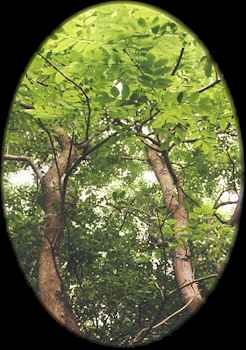
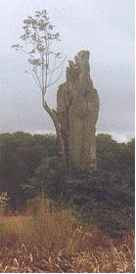

Nion
Ash (February 18 - March 17)

Ash - the common ash (Fraxinus excelsior L.) is a major tree of lowland forests in much of Europe, along with oaks and beeches. It grows to 130 feet in open sites, with a broad crown reminiscent of American elm trees. Ash was and still is an important timber tree, and is a traditional material for the handle of a besom. The common ash is occasionally cultivated in North America, and similar native ash species are widely grown as street trees. Ashes are members of the Olive family (Oleaceae). Curtis Clark
| The tree is a sort of curiosity. Driving along the road, it
looked like a hooded figure holding a branch, so we just had to get out and photograph it.
It is in fact an almost dead ash tree, but such is the tenacity of the ash, that it was
growing again from just one little point on the bark on an otherwise dead tree. Amazing. - Brigid and Diarmid |
 |
.